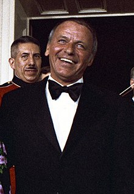
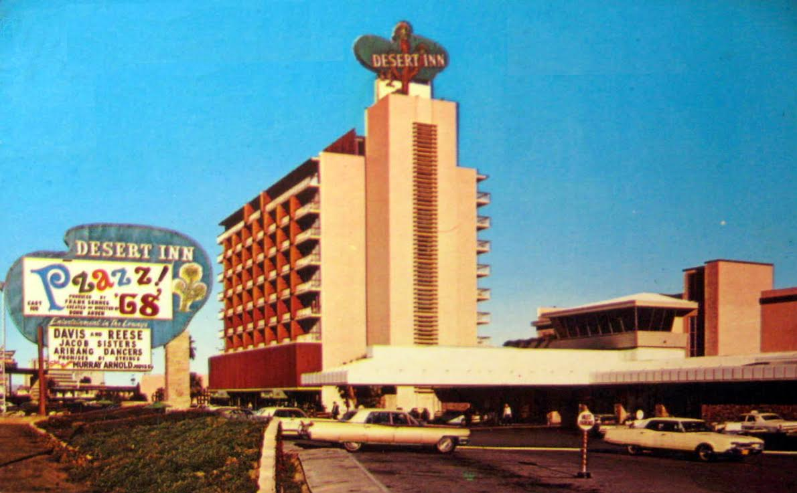

Ukratko o Sinatri...

Francis Albert Sinatra (Hoboken (New Jersey), 12.
prosinca 1915. – Los Angeles, 14. svibnja 1998.), američki pjevač i
glumac. Sinatra je bio živuće utjelovljenje američkog "Showmana", ali
i prilično kontroverzna osoba izvan pozornice. Sin talijanskog
emigranta, rođen je u radničkoj obitelji. Kao mladić počinje se baviti
glazbom, prvo u maloj skupini, a zatim samostalno. Postepeno niže
uspjehe i privlači milijune djevojaka. No, procvat rocka zadaje
ozbiljan udarac njegovoj karijeri. Sinatra tada kreće u filmske vode i
dobiva ulogu u filmu Odavde do vječnosti, za koju osvaja Oscara za
najbolju sporednu ulogu 1953. godine. Od tada se paralelno bavi
glumačkim i pjevačkim poslom .Nastupio je u 58 filmova. Poput prave
"zvijezde" čitavog je života punio stranice žutog tiska svojim
brakovima, avanturama, navodnim vezama s mafijom i svojom sklonošću
alkoholu. Autor je stotinjak albuma, a
s više od 150 milijuna snimaka diljem svijeta svrstan je među
najpopularnije te najbolje prodavane glazbenike u povijesti
, a američki glazbeni kritičar Robert Christgau nazvao ga je "najvećim
pjevačem 20. stoljeća."
Životopis
Rano doba
Francis Albert Sinatra rodio se 12. prosinca 1915. u Hobokenu u
američkoj saveznoj državi New Jersey. Sin jedinac roditelja
Talijana, Anthonya Martina Sinatre i Natalie Garaventi, nosio je kao
malo dijete odjeću roza boje koju je majka kupila prije rođenja
nadavši se kćerki. Mladog su Francisa već od malih nogu roditelji
prilično razmazili. Otac je bio vatrogasac, a majka, visoki
dužnosnik demokratske stranke. Bila je ta koja je uvijek skrbila da
Francis ima samo najljepše stvari za odjenuti te je uvijek i
izgledao kao da je netom iz izloga izašao. Već je s 15 godina imao
polovni auto, a s 15 je godina napustio srednju školu sa željom da
postane sportski novinar. Kroz cijelo se svoje školovanje aktivno
bavio svim sportovima, no posao novinara nije tako lako dobio, već
je morao početi kao vozač kamiona za novine New Jersey Observer, te
zatim i kao radnik u tiskari. Kad mu je urednik rekao da radnik u
tiskari ne zna dovoljno da bi bio novinar, Francis je upisao
večernju školu novinarstva gdje je učio engleski jezik,
daktilografiju i hvatanje bilješki, te je nakon toga i uspio dobiti
toliko željeni posao sportskog novinara. Sinatrina je najveća strast
tijekom cijelog života bio boks i to onaj najčišći, ili možda
najprljaviji, bez rukavica, ulični. Zasigurno je velikog utjecaja u
tome imao i njegov otac, Anthony Martin, nekadašnji ulični boksač
umjetničkog imena Marty O' Brien. Kad je bila riječ o pjevanju,
Sinatra je bio potpuno samouk. Nikada nije poznavao note te se
uvijek oslanjao samo na svoj odličan sluh i savršen osjećaj za
ritam. Jedan od prvih pjevačkih uzora mladom Francisu bio je Bing
Crosby te je nakon što ga je prvi put čuo rekao svojoj tadašnjoj
djevojci, kasnije supruzi Nancy Barbato, kako pod svaku cijenu mora
postati pjevač. Kao svoj najveći uzor do kraja života ipak je
navodio Billie Holiday koju je u više navrata slušao u njujorškim
klubovima 1930. Kako bi natjerao ljude da ga slušaju nastupao je na
lokalnim natjecanjima amatera gdje su nagrade bile 10$ ili set
posuđa, a u isto je vrijeme obilazio sve filmske studije u potrazi
za prvim glumačkim angažmanom.
Karijera

Nakon nekoliko kraćih pjevačkih angažmana, 1939. godine na jednoj je
zabavi Sinatri prišao veliki Tommy Dorsey i upitao ga, je li
zainteresiran za mjesto pjevača u njegovu big bandu, na što je
Sinatra oduševljeno odgovorio kako već godinama pokušava pjevati kao
što on svira trombon. Tako je započela vrlo plodna trogodišnja
suradnja tijekom koje će si Sinatra priskrbiti i razuzdanu hordu
mladih obožavatelja što mu je kasnije i omogućilo prelazak u solo
vode. Veliki domoljub, Sinatra je zdušno htio služiti domovini, no u
vojsku nije primljen zbog probušenog bubnjića kojeg je zaradio
tijekom tučnjave u kojoj ga je jedan momak udario lancem bicikla po
glavi. U veljači 1939. godine ženi ljubav svog djetinjstva Nancy
Barbato koja će mu roditi sve troje djece – Franka mlađeg, Nancy i
Christinu. U studenom 1946. izdavačka kuća Columbia Records
objavljivala je jednu Sinatrinu ploču mjesečno, a još je
fascinantnije to da su se u to vrijeme njegove ploče prodavale u 10
milijuna primjeraka godišnje. Pa ga je tako agencija za mlade
talente koja se brinula za njegovu promociju reklamirala sloganom
"The voice that thrilled millions", a novinari su mu u to vrijeme
nadjenuli, danas općepoznati, nadimak "The Voice", odnosno Glas. Na
vrhuncu slave 1945. godine, Sinatra osvaja i posebnu nagradu
Američke filmske akademije za ulogu u filmu The house i live in, no
otprilike od tada stvari se počinju kretati nizbrdo. Prvo su ga
jedne novine prozvale da druguje s mafijaškim šefom Luckyjem
Lucianom, a zatim ga je i čuveni Odbor za protuameričke aktivnosti
optužio za suradnju s mafijom i komunistima, što je bio slučaj s
velikim brojem javnih osoba u SAD-u tog vremena. Nakon što je udario
novinara trač rubrike novina Hearst zbog toga što ga je nazvao
"digićem", iste se novine obrušavaju na njega, a slijede otkazivanja
koncerata u New Yorku te raskid ugovora s izdavačkom kućom Columbia.
Uz sve to, veza s Avom Gardner postaje javni skandal pa se i Nancy
rastaje od njega te nakon svih tih udaraca Sinatra 1949. u 34.
godini života pada na samo dno.
Filmske uloge i glazba
Iako su ga prijatelji pokušavali natjerati da se trgne, Sinatra sam
je ipak bio taj koji je pokrenuo samog sebe. Pročitavši scenarij za
Odavde do vječnosti (From here to eternity) uviđa da je uloga
Maggia, malog Talijana koji odbija biti slomljen, kao stvorena za
njega te odlazi do šefa Columbia Picturesa Henryja Cohna i uspijeva
dobiti tu ulogu, koja mu donosi i Oscara. Iako je budžet od 8000$
koliko je dobio za taj film jako mala u odnosu na njegove ranije
filmske honorare od 150 000$, taj je trenutak Sinatru vratio na
tračnice s kojih do kraja svoje profesionalne karijere, pa i samoga
života, neće silaziti. Zaredali su filmovi Guys and Dolls, The
Tender Trap i The Man With The Golden Arm, a zatim i novi pjevački
ugovor s izdavačkom kućom Capitol records. Njegovo pjevanje bilo je
bolje no ikad, albumi se prodaju u milijunskim nakladama, a TV kuća
NBC nudi mu i multimilijunski ugovor. U to vrijeme Sinatra se
intenzivno druži s Kennedyjevima te i radi na promociji Johna F.
Kennedya tijekom njegove predsjedničke kampanje. Vođe demokratske
stranke zabrinuti su zbog Sinatrinih navodnih mafijaških konakata,
no ipak Kennedy postaje predsjednikom, a poznata je tadašnja
Sinatrina mačo gesta kada je kao nagradu Kennedyju javno ponudio da
dijele djevojku Judith Campbell Exner što je JFK i prihvatio. Kap
koja je prelila čašu bilo je Sinatrino upoznavanje Exner s čikaškim
mafijaškim šefom Samom Giancanom nakon čega je vodstvo demokratske
stranke, odnosno obitelj Kennedy, odlučilo prekinuti sve odnose s
Judith Exner, ali i sa Sinatrom. Nakon raskida veze s Avom Gardner
Sinatra je ljubovao s Lauren Bacall, udovicom Humphreya Bogarta,
južnoafričkom plesačicom Juliet Prowse, a 1966. godine ženi se i za
30 godina mlađu, 21-godišnju Miu Farrow no i od nje se već nakon 16
mjeseci rastaje. 11. srpnja 1976. godine ženi se za Barbaru Marx,
bivšu ženu jednog od četvorice čuvene braće Marx, Zeppa Marxa, koja
će ostati uz njega sve do smrti.
Svoju je karijeru pokušao okončati 1971. kada je najavio povlačenje,
no već 1973. vraća se novim albumom Ol Blue Eyes Is Back. 1980.
Nastupio je pred 175.000 ljudi u Rio de Janeirou, što ga je dovelo i
u Guinnesovu knjigu rekorda. Nemirni duh nije mu dao mira pa je i
dugo nakon prvotne najave mirovine nastupao diljem svjetskih
pozornica.
Smrt
Frank Sinatra umro je od srčanog udara 14. svibnja 1998. godine u
22:50.